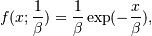
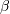
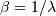

numpy.random.exponential¶
- numpy.random.exponential(scale=1.0, size=None)¶
Draw samples from an exponential distribution.
Its probability density function is

for x > 0 and 0 elsewhere.  is the scale parameter, which is the inverse of the rate parameter
 .
The rate parameter is an alternative, widely used parameterization
of the exponential distribution [R218].
.
The rate parameter is an alternative, widely used parameterization
of the exponential distribution [R218].The exponential distribution is a continuous analogue of the geometric distribution. It describes many common situations, such as the size of raindrops measured over many rainstorms [R216], or the time between page requests to Wikipedia [R217].
Parameters: scale : float
The scale parameter, .
size : int or tuple of ints, optional
Output shape. If the given shape is, e.g., (m, n, k), then m * n * k samples are drawn. Default is None, in which case a single value is returned.
References
[R216] (1, 2) Peyton Z. Peebles Jr., “Probability, Random Variables and Random Signal Principles”, 4th ed, 2001, p. 57. [R217] (1, 2) “Poisson Process”, Wikipedia, http://en.wikipedia.org/wiki/Poisson_process [R218] (1, 2) “Exponential Distribution, Wikipedia, http://en.wikipedia.org/wiki/Exponential_distribution